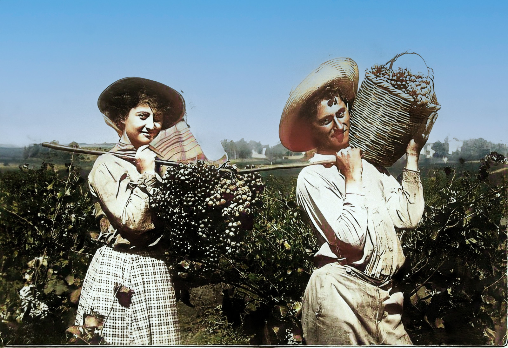

Ofakim · Agri-Tech ArenaAgroData▶צפו בסרטון הפתיחה▶ WATCH THE INTRO
…
אופקים · מזג אוויר חקלאי
THE BRAIN
🧠 הזירה החכמה
30 מנועים · דאטה, מחקר וחדשנות
OFAKIM
🌱 בירת האגרו-טק
מהנגב לעולם
🔥 הנקראות ביותר
🪴 חקלאות ביתית
9 שיטות לגידול בבית ↗🔥 הסטארטאפים החמים · אגרו-טק
…
INVESTMENT FUND
💰 קרן ההשקעות שלנו
משקיעים בסטארטאפים ובחדשנות אגרו-טק — מהרעיון לצמיחה. הצטרפו למסע.
לפרטים ולהשקעה ↗

🎓 לומדים היום את מקצועות העתיד
אגרו-טק וחקלאות מדייקת · תארים ולימודים
🏅 איש החקלאות

הוקרה לתורמי החקלאות
הזוכה נחשף מדי שנה בוועידת ישראל לחקלאות
באדיבות אגרו-משוב · ועידת ישראל לחקלאות ↗
צילום: PikiWiki Israel · CC BY
צילום: PikiWiki Israel · CC BY
תערוכת אגרו-משוב · תערוכת אגרו-משוב · תערוכת אגרו-משוב · תערוכת אגרו-משוב · תערוכת אגרו-משוב · תערוכת אגרו-משוב · תערוכת אגרו-משוב · תערוכת אגרו-משוב · תערוכת אגרו-משוב · תערוכת אגרו-משוב · תערוכת אגרו-משוב · תערוכת אגרו-משוב · תערוכת אגרו-משוב · תערוכת אגרו-משוב · תערוכת אגרו-משוב · תערוכת אגרו-משוב · תערוכת אגרו-משוב · תערוכת אגרו-משוב · תערוכת אגרו-משוב · תערוכת אגרו-משוב · תערוכת אגרו-משוב · תערוכת אגרו-משוב · תערוכת אגרו-משוב · תערוכת אגרו-משוב · תערוכת אגרו-משוב · תערוכת אגרו-משוב · תערוכת אגרו-משוב · תערוכת אגרו-משוב · תערוכת אגרו-משוב · תערוכת אגרו-משוב · תערוכת אגרו-משוב · תערוכת אגרו-משוב · תערוכת אגרו-משוב · תערוכת אגרו-משוב · תערוכת אגרו-משוב · תערוכת אגרו-משוב · תערוכת אגרו-משוב · תערוכת אגרו-משוב · תערוכת אגרו-משוב · תערוכת אגרו-משוב · תערוכת אגרו-משוב · תערוכת אגרו-משוב · תערוכת אגרו-משוב · תערוכת אגרו-משוב · תערוכת אגרו-משוב · תערוכת אגרו-משוב ·
תערוכת
אגרו-משוב📅 30/11 – 01/12אופקים ·
בירת האגרו-טק
של ישראלפרטים והרשמה כאן ↗
פרסומת
אגרו-משוב📅 30/11 – 01/12אופקים ·
בירת האגרו-טק
של ישראלפרטים והרשמה כאן ↗
…
…
…
…
🏙️ מרכיבי הזירה באופקים
…
…